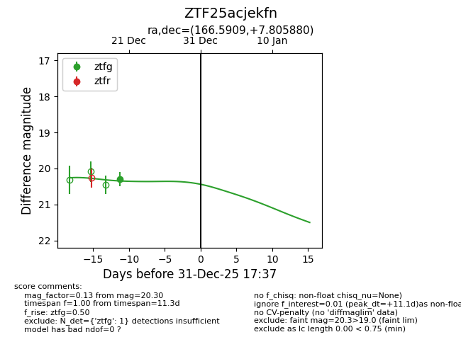
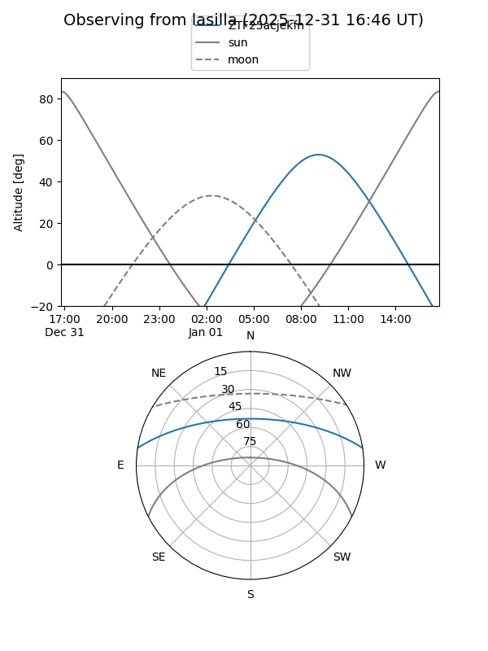
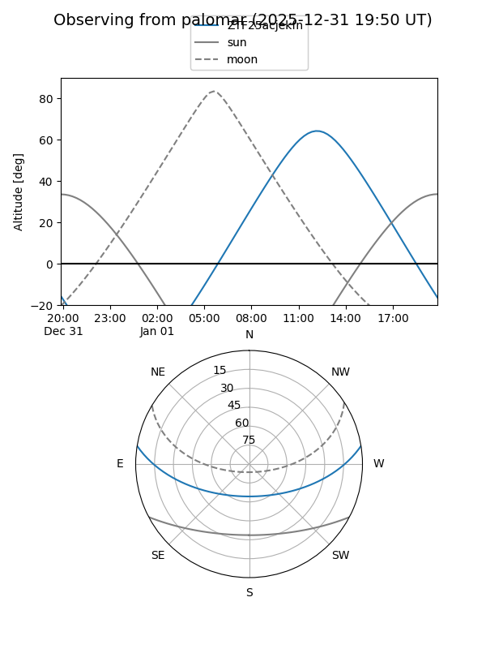
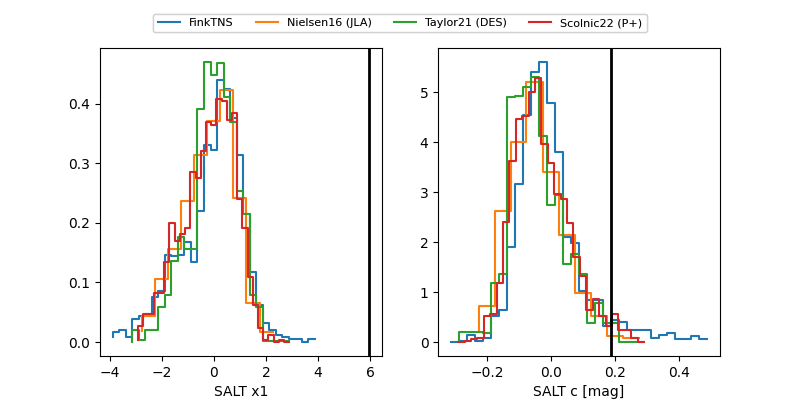

ZTF25acjekfn
Target ZTF25acjekfn at 2025-12-31 18:00
Aliases and brokers:
FINK: link
Lasair: link
ALeRCE: link
alt names
ZTF25acjekfn (ztf,fink_ztf)
Coordinates:
equatorial (ra, dec) = 166.5909,+7.80588
equatorial (HMS+DMS) = 11:06:21.81,+07:48:21.17
galactic (l, b) = (245.8839,+58.49708)
Flags:
Photometry:
last ztfg=20.30
1 ztfg detections
Lightcurve

Visibility


Additional plots
